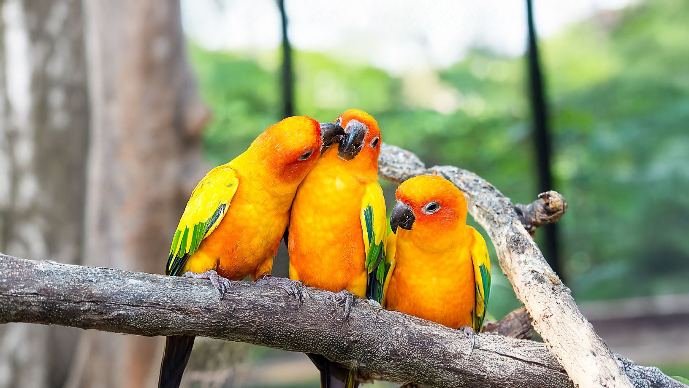
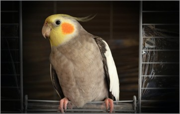

General Well Being
Birds are amazing and each breed is unique in its own way, particularly when it comes to their relational needs and well-being. Unfortunately, birds can experience sadness and depression just like humans. A number of root causes may be responsible for your bird's depression such as an illness (either physical or mental), losing its companion, or increasingly becoming bored. Some signs to help identify if your bird is experiencing depression may include the following:
- Reduced appetite
- Becoming increasingly irritable
- Aggressive behavior
- Songs have a different, more solemn tone
Be sure to tell your veterinarian if you see signs of any of these symptoms. Just like many illnesses, identifying and treating the symptoms earlier may drastically increase the lifespan of your birdie.

Cages & Environment
In general, the larger the bird cage the better. Pet birds need room to exercise their wings and climb. A variety of bird toys that provide enrichment activities give these intelligent animals plenty of things to do. Finches and canaries enjoy flying throughout a cage, so a flight cage is always preferred, especially with multiple birds. A parrot requires toys for chewing, while a finch or canary enjoys a bell or swing.
Bird toys are an absolute necessity for mental stimulation, beak health, and preventing destructive behaviors like feather plucking or chronic screaming. In the wild, birds spend most of their day foraging and chewing; domestic bird toys replicate these instinctual activities.

Diet & Treats
Choosing the best diet for your bird involves understanding the differences between pelleted diets and seed-based diets.
- Pelleted diets are formulated to provide complete nutrition and prevent selective eating. However, check for quality and avoid pellets with unnecessary additives.
- Seed diets are often a favorite but should only be a small part of your bird’s overall diet due to their high fat content. Overfeeding seeds can lead to obesity and malnutrition.
For optimal health, combine pellets with seeds, fresh vegetables, and fruits. This balanced approach ensures your feathered companion gets everything they need for a happy life.